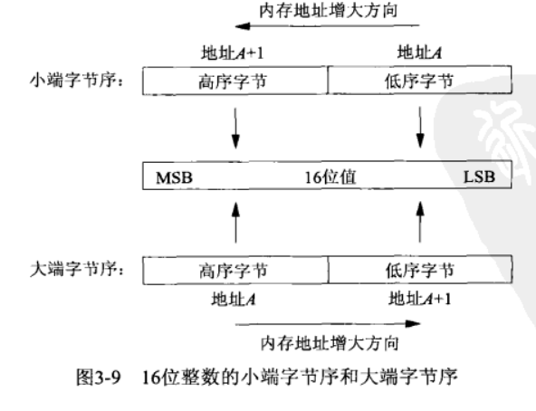
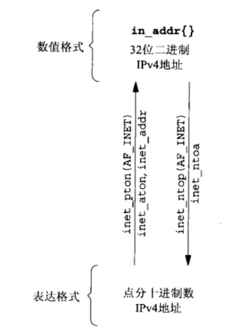
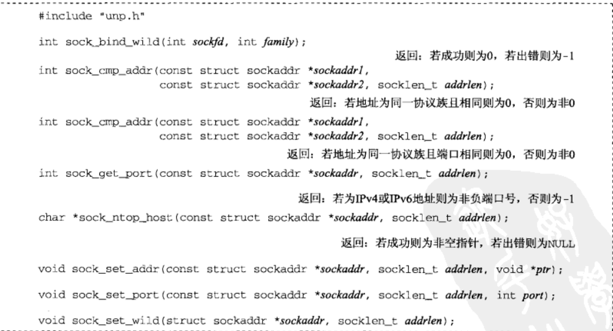

[UNP]:字节-地址转换函数
1. 值-结果参数
值-结果类型参数通常与套接字结构一起使用，是指这样一种参数:
其通常是某个整型变量的指针，当其被传递给函数时，函数需要用到它的值，通常用于标识套接字结构的大小，
当函数执行完毕，指针指向的值可能会发生改变，其内容通常为函数在套接字结构中写入的字节大小
例子
1
2
3
4
5struct sodkaddr_un cli;
socklen_t len;
len = sizeof(cli);
getpeername(unixfd, (SA *) &cil, &len); // len为值-结果类型参数len作为传入参数，表明了cli的大小，当函数执行完毕之后，表明该结构中有多少字节被写入对于固定长度的套接字结构来说，值-结果参数的传入与传出值总是一样的
而对于可变长度的套接字结构(如sockaddr_un)来说，传出值可能会小于传入值
2. 字节排序函数
大端与小端
- 大端： 高序字节在地址低处，低序字节在地址高处
- 小端： 高序字节在地址高处，低序字节在地址低处

主机字节序与网络字节序
不同的主机之间，可能会有着不同的字节序，但是在网络当中，统一使用大端字节序来传送字节，这也被称为网络字节序
字节序转换函数
在进行网络编程时，需要在主机字节序与网络字节序之间相互转换，POSIX提供了以下函数提供此功能
1 | |
各个字母含义
h: host , 主机
n: network, 网络
s: short, 16位
l: long, 32位
在那些主机字节序为大端的主机上，这些函数通常被定义为空宏
3. 字节操纵函数
有两套API用于对字节进行操纵:
BSD
1
2
3
4
5#include <strings.h>
void bzero(void *dest, size_t nbytes); //!
void bcopy(const void *src, void *dest, size_t nbytes);
int bcmp(const void *ptrl, const void *ptr2, size_t nbytes);
// return: 相等返回0， 否则非0ANSIC
1
2
3
4
5#include <string.h>
void *memset(void *dest, int c, size_t len);
void *memcpy(void *dest,const void *src, size_t nbytes); //!
int memcmp(const void *ptrl, const void *ptr2, sise_t nbytes); //!
// return: 相等返回0，ptr1 > ptr2 返回正值，否则负值在UNP中常用的API均以!标识
4. 地址转换函数
下面会介绍一些函数，在字符串(点分十进制) 与 网络字节序(struct in_addr, in_addr_t) 之间进行转换
IPV4
1
2
3
4
5
6
7
8
9#include <arpa/inet.h>
// 例：“206.168.112.96” -> struct in_addr（32bit IPv地址）
nt inet_aton(const char *strptr, struct in_addr *addrptr);
// 返回：字符串有效为 1，否则为 0
/ 例：struct in_addr（32bit IPv地址）-> “206.168.112.96”
char *inet_ntoa(struct in_addr inaddr);
// 点分十进制字符串a: address, 字符串地址
n: numeric, 字节序数值
IPV4/IPV6
与上面的API对应，只不过多了一个参数
family表示协议族1
2
3
4
5
6
7#include <arpa/inet.h>
int inet_pton(int family, const char *strptr, void*addrptr);
// 返回：字符串有效为 1，否则为 0
const char *inet_ntop(int family, const void *addrptr, char *strptr, size_t len);
// 点分十进制字符串p: presentation, 字符串表达
n: numeric, 字节序数值
关于
len参数的取值，在<arpa/inet.h>中定义了宏:1
2#define INET_ADDRSTRLEN 16
#define INET6_ADDRSTRLEN 46示意图

为了简化参数的传递，unp自定义了一些函数进行封装
2
3char *sock_ntop(const struct sockaddr *sockaddr, socklen_t addrlen);
// 将网络字节序转变为字符串，不过此时直接传递套接字结构即可
// return: 成功返回转换后的字符串，否则NULL
5. 字节流函数
下面依旧是一些UNP自己封装的函数, 用于字节流操纵，封装的原因是：套接字的缓存有限，此时读取的字节数经常小于给定的读取长度，一般的解决方案就是再次读取即可，这里UNP做了封装
1 | |
本博客所有文章除特别声明外，均采用 CC BY-SA 4.0 协议 ，转载请注明出处！